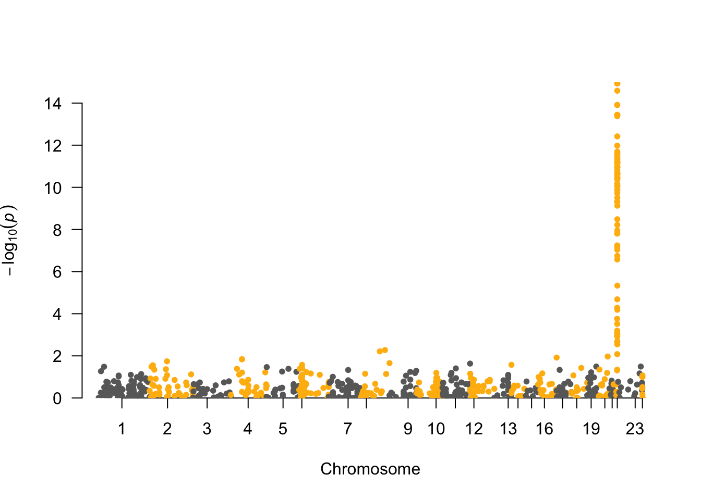
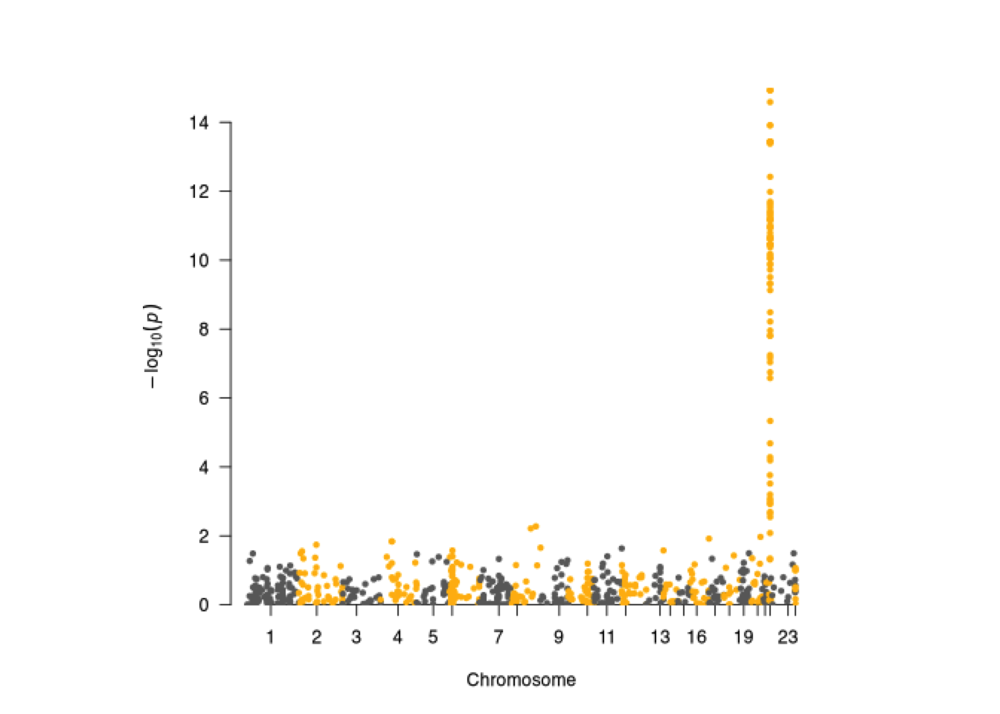
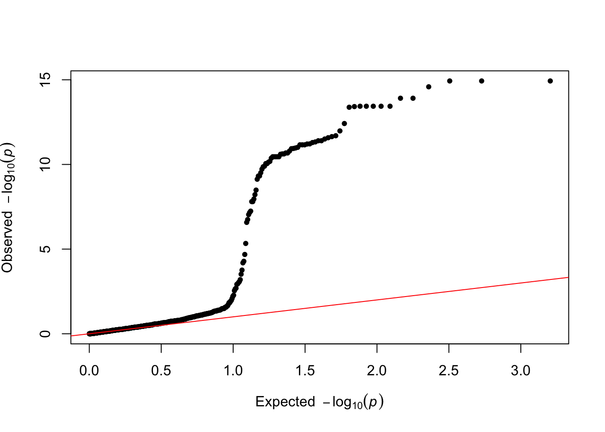
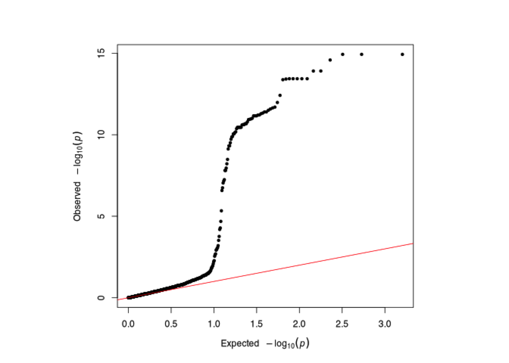

Chapter 6 GWAS with Binary Trait
This section introduces a hands-on practice of a genome-wide association study with binary traits. The reference paper provided a criteria to define the binary groups. The groups were divided based on MR(metabolite ratio) values, such that groups are coded as 1 if MR < 0.0146 and 0 if MR>= 0.0146. We will adopt their citeria in this notebook to define the binary groups. Then we perform a genome-wide case/control association analysis for the binary traits.
Reference paper: Hennig EE, Piatkowska M, Goryca K, Pospiech E, Paziewska A, Karczmarski J, Kluska A, Brewczynska E, Ostrowski J “Non-CYP2D6 variants selected by GWAS improved the prediction of impaired tamoxifen metabolism in breast cancer patients.” J Clin Med. 2019 Aug; 8(8): 1087. doi: 10.3390/jcm8081087
# change the path below to where you saved "cshl_gwas" folder
## run in R Terminal
mydir="/path/to/cshl_gwas/Data/case_data_binary"
cd $mydir6.1 Data Preparation
- Phenotype data (using R):
- We convert the continuous trait of
Z-endoxifen ratiofrom the previous notebook to binary traits based on the cut-off value 0.0146: - Values greater than 0.0146 are coded as 1
- Values less than 0.0146 are coded as 2
- Genotype data:
- genotype.ped
- genotype.map
The following code load the imputed phenotype data phenotype0.txt and extract our target phenotype data of Z-endoxifen ratio. Then, we convert the continuous traits into binary traits, and save the binary group variable binary_pheno0 to file binary_phenotype0.txt.
# R codes- run in R Console
pheno0=fread("phenotype0.txt",header=F) #read phenotype data
binary_pheno0=pheno0[,3]
binary_pheno0[binary_pheno0>=0.0146]=1 #code values greater than 0 as 1
binary_pheno0[binary_pheno0<0.0146]=2 #code values less than 0 as 2
write.table(binary_pheno0,"binary_phenotype0.txt",quote=F,row.names=F,col.names=F,sep=" ") #save binary phenotype data
head(binary_pheno0)## V3
## <num>
## 1: 1
## 2: 1
## 3: 2
## 4: 2
## 5: 2
## 6: 2After the binary group is ready, we use the same procedure in section 5.3 of last notebook to prepare PLINK alternate phenotype file (in Linux):
Note: famID.txt and samID.txt are both required for PLINK step. They are already prepared in last notebook.
## bash codes- run in terminal
paste famID.txt samID.txt binary_phenotype0.txt > binary_phenotype.txtTake a look at the prepared phenotype data.
## V1 V2 V3
## 1 1 3TX 1
## 2 2 23TX 1
## 3 3 41TX 2
## 4 4 54TX 2
## 5 5 76TX 2
## 6 6 94TX 26.2 Genome-Wide Case/Control Association Test (in PLINK)
Similar as last notebook, we will still use PLINK to perform association test. The only change is the phenotype file.
The following code conducts the genome-wide association test by PLINK in bash code. This code will take several minutes to finish.
## # both Mac and Windows can run in Terminal
# windows users
../../Tools/PLINK/plink_win64_20231211/plink.exe \
--noweb --file genotype_1k --assoc --pheno binary_phenotype.txt --adjust --all-pheno --out younameit# macOS users
../../Tools/PLINK/plink_mac_20231211/plink \
--noweb --file genotype_1k --assoc --pheno binary_phenotype.txt --adjust --all-pheno --out younameit## PLINK v1.90b7.2 64-bit (11 Dec 2023) www.cog-genomics.org/plink/1.9/
## (C) 2005-2023 Shaun Purcell, Christopher Chang GNU General Public License v3
## Logging to younameit.log.
## Options in effect:
## --adjust
## --all-pheno
## --assoc
## --file genotype_1k
## --noweb
## --out younameit
## --pheno binary_phenotype.txt
##
## Note: --noweb has no effect since no web check is implemented yet.
## 16384 MB RAM detected; reserving 8192 MB for main workspace.
## Scanning .ped file... 0%1%1%2%2%3%3%4%4%5%5%6%6%7%7%8%8%9%9%10%10%11%11%12%13%13%14%14%15%15%16%16%17%17%18%18%19%19%20%20%21%21%22%22%23%23%24%24%25%26%26%27%27%28%28%29%29%30%30%31%31%32%32%33%33%34%34%35%35%36%36%37%38%38%39%39%40%40%41%41%42%42%43%43%44%44%45%45%46%46%47%47%48%48%49%49%50%51%51%52%52%53%53%54%54%55%55%56%56%57%57%58%58%59%59%60%60%61%61%62%63%63%64%64%65%65%66%66%67%67%68%68%69%69%70%70%71%71%72%72%73%73%74%74%75%76%76%77%77%78%78%79%79%80%80%81%81%82%82%83%83%84%84%85%85%86%86%87%88%88%89%89%90%90%91%91%92%92%93%93%94%94%95%95%96%96%97%97%98%98%99%100%.ped scan complete (for binary autoconversion).
## Performing single-pass .bed write (1000 variants, 192 people).
## 0%1%2%3%4%5%6%7%8%9%10%11%12%13%14%15%16%17%18%19%20%21%22%23%24%25%26%27%28%29%30%31%32%33%34%35%36%37%38%39%40%41%42%43%44%45%46%47%48%49%50%51%52%53%54%55%56%57%58%59%60%61%62%63%64%65%66%67%68%69%70%71%72%73%74%75%76%77%78%79%80%81%82%83%84%85%86%87%88%89%90%91%92%93%94%--file: younameit-temporary.bed + younameit-temporary.bim +
## younameit-temporary.fam written.
## 1000 variants loaded from .bim file.
## 192 people (0 males, 192 females) loaded from .fam.
## 192 phenotype values present after --pheno.
## Using 1 thread (no multithreaded calculations invoked).
## Before main variant filters, 192 founders and 0 nonfounders present.
## Calculating allele frequencies... 0%1%2%3%4%5%6%7%8%9%10%11%12%13%14%15%16%17%18%19%20%21%22%23%24%25%26%27%28%29%30%31%32%33%34%35%36%37%38%39%40%41%42%43%44%45%46%47%48%49%50%51%52%53%54%55%56%57%58%59%60%61%62%63%64%65%66%67%68%69%70%71%72%73%74%75%76%77%78%79%80%81%82%83%84%85%86%87%88%89%90%91%92%93%94%95%96%97%98%99% done.
## Warning: Nonmissing nonmale Y chromosome genotype(s) present; many commands
## treat these as missing.
## Total genotyping rate is 0.995331.
## 1000 variants and 192 people pass filters and QC.
## Among remaining phenotypes, 97 are cases and 95 are controls.
## 192 phenotype values present after --pheno.
## P1 has 97 cases and 95 controls.
## Writing C/C --assoc report to younameit.P1.assoc ... 0%11%16%20%24%27%43%50%53%56%61%64%68%70%72%73%76%78%79%82%84%85%94%96%99%done.
## --adjust: Genomic inflation est. lambda (based on median chisq) = 1.37231.
## 0%1%2%3%4%5%6%7%8%9%10%11%12%13%14%15%16%17%18%19%20%21%22%23%24%25%26%27%28%29%30%31%32%33%34%35%36%37%38%39%40%41%42%43%44%45%46%47%48%49%50%51%52%53%54%55%56%57%58%59%60%61%62%63%64%65%66%67%68%69%70%71%72%73%74%75%76%77%78%79%80%81%82%83%84%85%86%87%88%89%90%91%92%93%94%95%96%97%98%99%--adjust values (805 variants) written to younameit.P1.assoc.adjusted .- –noweb suppress checking for new version,
- –file specifies .ped and .map files,
- –assoc performs case/control or QTL association, you can also perform other tests by changing the options,
- –pheno specifies alternate phenotype,
- –adjust generates a file of adjusted significance values that correct for all tests performed and other metrics,
- –all-pheno performs association test for all phenotypes in binary_phenotype.tix file,
- –out specifies output filename.
This will generate the files younameit.P1.assoc with fields as follows:
CHR Chromosome
SNP SNP ID
BP Physical position (base-pair)
A1 Minor allele name (based on whole sample)
F_A Frequency of this allele in cases
F_U Frequency of this allele in controls
A2 Major allele name
CHISQ Basic allelic test chi-square (1df)
P Asymptotic p-value for this test
OR Estimated odds ratio (for A1, i.e. A2 is reference) –adjust generates the file younameit.adjust, which contains the following fields
CHR Chromosome number
SNP SNP identifer
UNADJ Unadjusted p-value
GC Genomic-control corrected p-values
BONF Bonferroni single-step adjusted p-values
HOLM Holm (1979) step-down adjusted p-values
SIDAK_SS Sidak single-step adjusted p-values
SIDAK_SD Sidak step-down adjusted p-values
FDR_BH Benjamini & Hochberg (1995) step-up FDR control
FDR_BY Benjamini & Yekutieli (2001) step-up FDR control
6.3 Manhattan Plot and Q-Q Plot
Similar to the GWAS study for continuous traits, we generate Manhattan Plot and Q-Q Plot to visualize the results of GWAS test.
The Manhattan plot is a good way to visualize the resuls of GWAS test. For more details, please refer: https://en.wikipedia.org/wiki/Manhattan_plot
The Q-Q plot for GWAS is another way to visualize the signals. For more details, please refer:https://genome.sph.umich.edu/wiki/Code_Sample:_Generating_QQ_Plots_in_R
qqman is an R package for creating Q-Q and manhattan plots from GWAS results. See the reference page http://www.gettinggeneticsdone.com/2014/05/qqman-r-package-for-qq-and-manhattan-plots-for-gwas-results.html.
The qqman R package assumes you have columns named SNP, CHR, BP, and P, corresponding to the SNP name (rs number), chromosome number, base-pair position, and p-value.
The following code prepares qqman R input files (CHR, SNP, BP, P) (in Linux)
Here is sample data for P1.assoc
CHR SNP BP P
1 rs9701055 565433 0.757
1 rs3094315 752566 0.7004
1 rs2073813 753541 0.467
1 rs3131969 754182 0.131Load association results. Loaded results are in assoc.
# R codes- run in R Console
assoc=fread("P1.assoc", header=T)
assoc=assoc[(assoc$CHR!=0) & (!is.na(assoc$P)),]
head(assoc)## CHR SNP BP P
## <int> <char> <int> <num>
## 1: 1 rs307354 1264539 0.98080
## 2: 1 rs12121577 11794553 0.56050
## 3: 1 rs4845898 12339619 0.05366
## 4: 1 rs665691 22960354 0.88740
## 5: 1 rs7537875 24695151 0.71760
## 6: 1 rs8876 25687308 0.640306.4 Generate Manhattan plot
We use the same commands as continuous trait to generate a Manhattan plot. The following code will take several minutes to finish.
# R codes- run in R Console
png(filename=paste0("Manhattan_Plot_for_binary_z-endoxifen_ratio.png"), type="cairo")## Warning in grSoftVersion(): unable to load shared object '/Library/Frameworks/R.framework/Resources/modules//R_X11.so':
## dlopen(/Library/Frameworks/R.framework/Resources/modules//R_X11.so, 0x0006): Library not loaded: /opt/X11/lib/libSM.6.dylib
## Referenced from: <31EADEB5-0A17-3546-9944-9B3747071FE8> /Library/Frameworks/R.framework/Versions/4.4-arm64/Resources/modules/R_X11.so
## Reason: tried: '/opt/X11/lib/libSM.6.dylib' (no such file), '/System/Volumes/Preboot/Cryptexes/OS/opt/X11/lib/libSM.6.dylib' (no such file), '/opt/X11/lib/libSM.6.dylib' (no such file), '/Library/Frameworks/R.framework/Resources/lib/libSM.6.dylib' (no such file), '/Library/Java/JavaVirtualMachines/jdk-11.0.18+10/Contents/Home/lib/server/libSM.6.dylib' (no such file)## Warning in cairoVersion(): unable to load shared object '/Library/Frameworks/R.framework/Resources/library/grDevices/libs//cairo.so':
## dlopen(/Library/Frameworks/R.framework/Resources/library/grDevices/libs//cairo.so, 0x0006): Library not loaded: /opt/X11/lib/libXrender.1.dylib
## Referenced from: <63619C6D-FE72-3544-BCEF-9C834A5E39D8> /Library/Frameworks/R.framework/Versions/4.4-arm64/Resources/library/grDevices/libs/cairo.so
## Reason: tried: '/opt/X11/lib/libXrender.1.dylib' (no such file), '/System/Volumes/Preboot/Cryptexes/OS/opt/X11/lib/libXrender.1.dylib' (no such file), '/opt/X11/lib/libXrender.1.dylib' (no such file), '/Library/Frameworks/R.framework/Resources/lib/libXrender.1.dylib' (no such file), '/Library/Java/JavaVirtualMachines/jdk-11.0.18+10/Contents/Home/lib/server/libXrender.1.dylib' (no such file)## Warning in png(filename =
## paste0("Manhattan_Plot_for_binary_z-endoxifen_ratio.png"), : failed to load
## cairo DLL
## null device
## 1# R codes- run in R Console
img <- readPNG("Manhattan_Plot_for_binary_z-endoxifen_ratio.png")
grid::grid.raster(img)
This plot is very similar compared with the Manhattan plot we got for continuous trait. They both contain a very significant SNP in chromosome 22, however, this SNP for binary trait is not so significant as for continuous trait. The y-axis value for continuous trait is about 20.
6.5 Generate Q-Q plot
Similarly, a Q-Q plot is generated with qq function to visualize the test results. This code will take several minutes to finish.
# R codes- run in R Console
png(filename=paste0("Q-Q_Plot_for_binary_z-endoxifen_ratio.png"), type="cairo")## Warning in png(filename = paste0("Q-Q_Plot_for_binary_z-endoxifen_ratio.png"),
## : failed to load cairo DLL
## null device
## 1# R codes- run in R Console
img <- readPNG("Q-Q_Plot_for_binary_z-endoxifen_ratio.png")
grid::grid.raster(img)
Q-Q plot still has a long tail, meaning that there are causal polymorphisms.
6.6 Multiple-Test Correction
Again, since we simultaneously test the significance of each SNP, we need to control the overall type-I error rate using false discovery rate (FDR).
Prepare R input files (in Linux) The following code extracts the CHR, SNP, UNADJ, FDR_BH from the PLINK output younameit.adjusted. The results are stored in the files: P1.assoc.adjusted.
## bash codes- run in terminal
awk '{print $1,$2,$3,$9}' younameit.P1.assoc.adjusted > P1.assoc.adjustedSignificant SNPs after a multiple-test correction of FDR (using R) The following code identifies the significant SNPs by the FDR adjusted p-values with cutoff 0.05.
# R codes- run in R Console
assoc.adjusted=fread("P1.assoc.adjusted")#load association results
sigidx=which(assoc.adjusted$FDR_BH<0.05) #index of significant SNPs
sigSNP=assoc.adjusted[sigidx,] #extract association results for significant SNPs
write.table(sigSNP, "significant_SNPs_for_z-endoxifen_ratio.txt", row.names=F, col.names=T, quote=F, sep=" ") #save results
#view result
dim(sigSNP)## [1] 79 4## CHR SNP UNADJ FDR_BH
## <int> <char> <num> <num>
## 1: 22 rs7245 1.172e-15 3.144e-13
## 2: 22 rs2284087 1.172e-15 3.144e-13
## 3: 22 rs5758589 1.172e-15 3.144e-13
## 4: 22 kgp7814563 2.593e-15 5.218e-13
## 5: 22 kgp11017363 1.228e-14 1.647e-12
## 6: 22 kgp137964 1.228e-14 1.647e-12There are 79 significant SNPs identified. However, remember that we have many SNPs with kgp identifiers, we still need to check if they have matched rs identifiers using UCSC Table Browser.
First we need to match genotype information such as position.
# R codes- run in R Console
map<- fread("genotype_1k.map",header=F)
names(map) <- c("CHR","SNP","GP","BP") # assign header
zr_result <- fread("significant_SNPs_for_z-endoxifen_ratio.txt")
idx <- match(zr_result$SNP, map$SNP)#index of map that match with SNP in result
zr_result$BP <- map$BP[idx]
head(zr_result)## CHR SNP UNADJ FDR_BH BP
## <int> <char> <num> <num> <int>
## 1: 22 rs7245 1.172e-15 3.144e-13 42481849
## 2: 22 rs2284087 1.172e-15 3.144e-13 42485671
## 3: 22 rs5758589 1.172e-15 3.144e-13 42518382
## 4: 22 kgp7814563 2.593e-15 5.218e-13 42465788
## 5: 22 kgp11017363 1.228e-14 1.647e-12 42348790
## 6: 22 kgp137964 1.228e-14 1.647e-12 42359204## [1] 79 5Next, we will extract the SNPs with kgp identifier, and prepare the table that will be submitted to UCSC.
## CHR SNP UNADJ FDR_BH BP
## <int> <char> <num> <num> <int>
## 1: 22 kgp7814563 2.593e-15 5.218e-13 42465788
## 2: 22 kgp11017363 1.228e-14 1.647e-12 42348790
## 3: 22 kgp137964 1.228e-14 1.647e-12 42359204
## 4: 22 kgp9081934 3.649e-14 2.558e-12 42389839
## 5: 22 kgp12016588 3.649e-14 2.558e-12 42395960
## 6: 22 kgp11007658 3.649e-14 2.558e-12 42401749kgp_snps$CHR<- paste0("chr",kgp_snps$CHR)
kgp_snps$BP_1<- kgp_snps$BP-1
fwrite(kgp_snps[,c("CHR","BP_1","BP","SNP")], "kgp_snps.txt", sep=" ", quote=F, row.name=F, col.name=F)After matching, we again got only 2 matched SNPs, same as in continuous study.
# R codes- run in R Console
kgp_rs<- fread("kgp_rs.txt",header=F)
names(kgp_rs)<- c("CHR","BP_1","BP","SNP")# assign header
idx <- match(kgp_rs$BP, kgp_snps$BP)# get index of these matched SNPs in results
kgp_match<- kgp_snps[idx[!is.na(idx)],]
kgp_match$SNP<- kgp_rs$SNP[!is.na(idx)] # replace kgp identifier with rs identifier
kgp_match## CHR SNP UNADJ FDR_BH BP BP_1
## <char> <char> <num> <num> <int> <num>
## 1: chr22 rs60133761 3.508e-11 6.567e-10 42668504 42668503
## 2: chr22 rs140061401 3.649e-14 2.558e-12 42395960 42395959After combining with other rs identified SNPs, we got a total of 29 significant SNPs after multiple test correction.
# R codes- run in R Console
rs_snps <- zr_result[grepl("rs",zr_result$SNP),]
kgp_match$CHR <- "22"
rs_snps <- rbind(rs_snps, kgp_match[,-6])
fwrite(rs_snps, "significant_snps_with_rs_for_z-endoxifen-ratio.txt", sep=" ", quote=F, row.name=F, col.name=T)
dim(rs_snps)## [1] 29 5## CHR SNP UNADJ FDR_BH BP
## <char> <char> <num> <num> <int>
## 1: 22 rs7245 1.172e-15 3.144e-13 42481849
## 2: 22 rs2284087 1.172e-15 3.144e-13 42485671
## 3: 22 rs5758589 1.172e-15 3.144e-13 42518382
## 4: 22 rs1063392 3.649e-14 2.558e-12 42454950
## 5: 22 rs133335 3.814e-14 2.558e-12 42416056
## 6: 22 rs5751247 2.015e-12 1.014e-10 42633054
## 7: 22 rs8138080 2.271e-12 1.076e-10 42396371
## 8: 22 rs5751191 3.974e-12 1.529e-10 42370991
## 9: 22 rs1062753 3.988e-12 1.529e-10 42392811
## 10: 22 rs4467371 5.090e-12 1.782e-10 42541328
## 11: 22 rs932376 6.210e-12 1.993e-10 42614362
## 12: 22 rs2011944 6.932e-12 1.993e-10 42569999
## 13: 22 rs4453786 9.750e-12 2.707e-10 42563308
## 14: 22 rs5751255 1.064e-11 2.856e-10 42648408
## 15: 22 rs5751221 2.500e-11 5.296e-10 42516366
## 16: 22 rs5758651 3.508e-11 6.567e-10 42609148
## 17: 22 rs1052717 6.599e-11 1.181e-09 42281429
## 18: 22 rs5751239 1.266e-10 2.080e-09 42592239
## 19: 22 rs133280 4.811e-10 7.172e-09 42255525
## 20: 22 rs134871 3.272e-09 4.704e-08 42652716
## 21: 22 rs8140869 6.890e-08 8.946e-07 42344297
## 22: 22 rs742086 1.797e-07 2.260e-06 42552253
## 23: 22 rs5758511 2.643e-07 3.273e-06 42336172
## 24: 22 rs6002673 4.638e-06 5.656e-05 42691296
## 25: 22 rs7285782 5.222e-05 6.182e-04 42225018
## 26: 22 rs17365991 8.325e-04 9.180e-03 41790179
## 27: 22 rs9607821 2.249e-03 2.321e-02 41983938
## 28: 22 rs60133761 3.508e-11 6.567e-10 42668504
## 29: 22 rs140061401 3.649e-14 2.558e-12 42395960
## CHR SNP UNADJ FDR_BH BP6.7 Top 10 SNPs
Here, we present the Top 10 SNPs and p-values for both binary and continuous Z-endoxifen ratio trait.
# R codes- run in R Console
# binary trait
assoc_binary=read.table("significant_snps_with_rs_for_z-endoxifen-ratio.txt",header=T) #load association results for binary_r_met
ordered_assoc_binary=assoc_binary[order(assoc_binary$FDR_BH),] #order association results based on p-value
head(ordered_assoc_binary,10) #association results for the top 10 SNPs with the 10 smallest p-values## CHR SNP UNADJ FDR_BH BP
## 1 22 rs7245 1.172e-15 3.144e-13 42481849
## 2 22 rs2284087 1.172e-15 3.144e-13 42485671
## 3 22 rs5758589 1.172e-15 3.144e-13 42518382
## 4 22 rs1063392 3.649e-14 2.558e-12 42454950
## 5 22 rs133335 3.814e-14 2.558e-12 42416056
## 29 22 rs140061401 3.649e-14 2.558e-12 42395960
## 6 22 rs5751247 2.015e-12 1.014e-10 42633054
## 7 22 rs8138080 2.271e-12 1.076e-10 42396371
## 8 22 rs5751191 3.974e-12 1.529e-10 42370991
## 9 22 rs1062753 3.988e-12 1.529e-10 42392811# R codes- run in R Console
# continuous trait
assoc_cont=read.table("../case_data/significant_snps_with_rs_for_z-endoxifen-ratio.txt",header=T) #load association results for binary_r_met
ordered_assoc_cont=assoc_cont[order(assoc_cont$FDR_BH),] #order association results based on p-value
head(ordered_assoc_cont,10) #association results for the top 10 SNPs with the 10 smallest p-values## CHR SNP UNADJ FDR_BH BP
## 1 22 rs8138080 3.318e-20 1.335e-17 42396371
## 2 22 rs1062753 5.643e-19 9.347e-17 42392811
## 3 22 rs4467371 1.365e-18 1.570e-16 42541328
## 4 22 rs7245 4.102e-18 2.540e-16 42481849
## 5 22 rs2284087 4.102e-18 2.540e-16 42485671
## 6 22 rs5758589 4.102e-18 2.540e-16 42518382
## 7 22 rs5751247 6.923e-18 3.981e-16 42633054
## 8 22 rs2011944 8.301e-18 4.176e-16 42569999
## 9 22 rs4453786 1.068e-17 5.059e-16 42563308
## 10 22 rs5751221 3.812e-17 1.534e-15 42516366